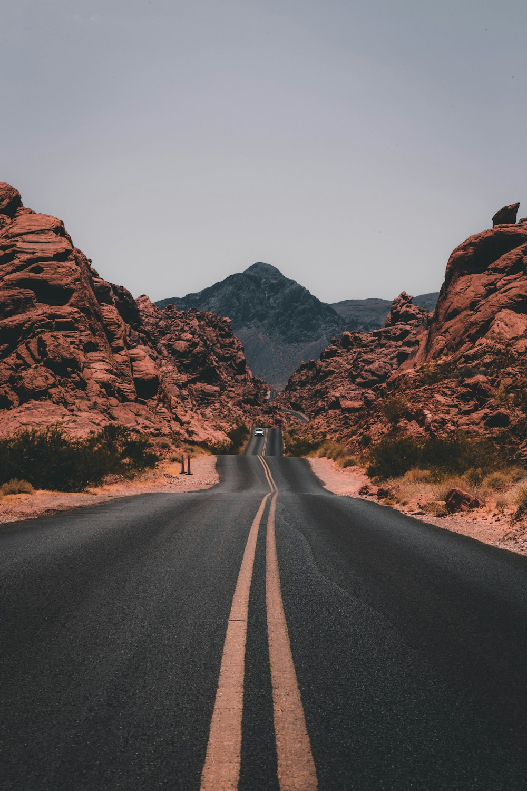

17 años
Tijuana, Baja California, México
Diseñar, imaginar y construir

Después de la preparatoria
Al terminar la preparatoria quiero explorar carreras relacionadas con el diseño o la arquitectura. Me atrae la idea de crear espacios y materiales visuales que sean útiles y agradables para las personas. Antes de elegir, quiero conocer las diferencias entre ambas opciones y revisar los trabajos que realiza cada profesión.
Mi plan es reunir dibujos, textos y fotografías en una carpeta personal para observar mi progreso. También quiero aprender herramientas digitales y practicar cómo explicar una propuesta. A largo plazo me gustaría participar en proyectos culturales o creativos que aporten algo a Tijuana.
Los siguientes pasos de mi recorrido
Ahora
Leer con regularidad y terminar una pequeña colección de dibujos y textos.
Al terminar la preparatoria
Investigar carreras de diseño y arquitectura y preparar una carpeta de trabajos.
Más adelante
Colaborar en proyectos creativos que tengan relación con la ciudad y su comunidad.
Una carpeta para contar mi propia historia
Uno de mis proyectos personales sería reunir fotografías y dibujos de lugares cotidianos de Tijuana en una pequeña publicación. Me interesan los letreros, las fachadas y las escenas que muestran cómo las personas hacen suyo un espacio.
Quiero empezar con un cuaderno de observación y después preparar versiones digitales de mis trabajos. Con el tiempo podría reunir una carpeta que me ayude a elegir entre el diseño y la arquitectura, y mostrar cómo han cambiado mis ideas.
Mi manera de mirar el futuro
«Observar con atención es el primer paso para crear algo propio.»